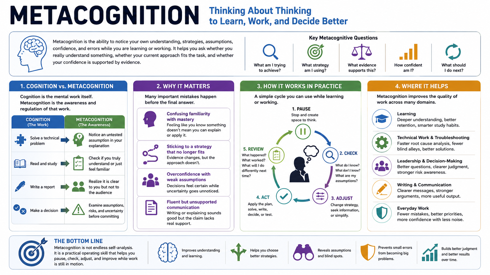

What Is Metacognition?
Connecting to LMS... Progress: in progress

Narration
Metacognition is thinking about thinking, but in practice it is more useful than that short definition sounds. It is the ability to notice your own understanding, strategies, assumptions, confidence, and errors while you are learning or working. It helps you ask whether you really understand something, whether your current approach fits the task, and whether your confidence is supported by evidence.
Cognition is the mental work itself: reading, remembering, solving, deciding, writing, comparing, or troubleshooting. Metacognition is the awareness and regulation of that work. For example, solving a technical problem is cognition. Noticing that your first explanation depends on an untested assumption is metacognition. Writing a report is cognition. Realizing that the report is clear to you but not to the audience is metacognition.
Metacognition matters because many important mistakes happen before the final answer. A learner may confuse familiarity with mastery. An engineer may keep applying the same strategy after evidence stops fitting. A leader may make a confident decision while missing uncertainty in the assumptions. A writer may produce fluent text without checking whether the claim is actually supported.
The point is not endless self-analysis. Metacognition is a practical operating skill. It gives people a way to pause, check, adjust, and improve while work is still in motion. In learning, technical work, troubleshooting, leadership, writing, and decision-making, that ability can prevent small misunderstandings from becoming larger errors.